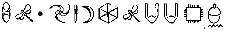
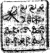

ARTEMIS FOWL’UN GÜNLÜĞÜNDEN ALINTI. DİSK 2. KODLANMIŞTIR
BABAM sonunda bilincine kavuştu. Tabii ki rahatladım ama o gün bana söylediği son sözler aklımda koşuşturup duruyorlar.
“Altın o kadar da önemli değildir, Arty,” demişti. "Güç de. İhtiyacımız olan şey işte tam burada. Üçümüz.”
Büyünün babamı değiştirmiş olması mümkün müydü? Bunu bilmem gerekiyordu. Onunla yalnız konuşmam lazımdı. Ertesi sabah saat 3’te Kâhya kiralanmış bir Mercedes’le beni Helsinki Üniversite Hastanesine getirdi.
Babam hâlâ uyanıktı, lambanın ışığında Savaş ve Barış’ı okuyordu.
“Hiç de eğlenceli değil,” diye yorum yaptı. Yine şaka. Gülümsemeye çalıştım ama yüzüm ona uygun havada değildi.
Babam kitabı kapattı. “Seni bekliyordum, Arty. Konuşmamız lazım. Açık açık konuşmamız gereken şeyler var.”
Yatağın ayak ucunda kaskatı durdum. ‘‘Evet, Baba. Sana katılıyorum.”
Babamın gülümsemesinde üzüntü belirtileri vardı. “Çok resmi. Ben de kendi babamla aynı şekilde olduğunu hatırlıyorum. Bazen beni hiç tanımadığını düşünürüm. Aynı şeyin bize de olacağından endişeleniyorum. Bu yüzden konuşmamızı istedim, evlat, banka hesapları için değil. Hisse senetleri için değil. Şirket ele geçirmeler için değil. İş konuşmak istemiyorum, seninle ilgili konuşmak istiyorum.”
Ben de bundan korkuyordum. “Benden mi? Burada önemli olan sensin, Baba.”
“Belki ama annenin kafası rahatlayana kadar ben mutlu olamam.” “Rahatlayana kadar mı?” diye sordum, sanki bunun nereye gideceğini bilmezmiş gibi.
“Masum rolü oynama, Artemis. Avrupa’daki birkaç polis gücündeki bağlantılarımı aradım. Göründüğü kadarıyla yokluğumda aktifmişsin. Hem de çok aktif.”
Azarlanıyor muyum, yoksa övülüyor muyum enim olamadığım için omuz silktim.
“Kısa bir süre önce olsaydı soytarılıklarından dolayı çok etkilenebilirdim. Bu kadar cesur ve halâ çocuk. Ama artık baban olarak her şey değişti diyorum, Arty. Çocukluğunu yaşaman gerekiyor. Tatilden sonra okuluna dönmen ve aile işlerini bana bırakman hem benim, hem de annenin arzusu.”
“Ama Baba.”
“Bana güven, Arty. Ben senden çok daha uzun zamandır bu işin içindeyim. Şu andan itibaren Fowlların dürüst olacakları konusunda annene söz verdim. Bütün Fowlların. Bir şansım daha var ve onu aç gözlülükle boşa harcamayacağım. Artık bir aileyiz. Düzgün bir aile. Şu andan itibaren Fowl ismi şeref ve dürüstlükle anılacak. Kabul mu?”
“Kabul,” dedim, elini sıkarak.
Ama ya Chicagolu Jon Spiro’yla olan buluşmam ne olacaktı? Planladığım gibi devam etmeye karar verdim. Son bir macera; sonra Fowllar düzgün bir aile olabilirler. Zaten Kâhya bana eşlik edecekti. Ne yanlış gidebilir ki?
FOWL MALİKÂNESİ
Kâhya gözlerini açtı. Evdeydi. Artemis yatağının yanındaki koltukta uyuyordu. Çocuk sanki yüz yaşındaymış gibi görünüyordu. Başından geçen bunca şeyden sonra böyle olması şaşırtıcı değildi. Ama artık bu hayat bitmişti. Hepsi.
“Kimse var mı?” dedi koruma.
Artemis anında uyandı.
“Kâhya, aramıza geri geldin.”
Artemis dirsekleri üzerinde doğruldu. Oldukça çaba harcamıştı.
“Bu benim için de bir sürpriz. Seni ya da başka birini görmeyi beklemiyordum.”
Artemis yatağın başucundaki sürahiden bir bardak su doldurdu.
“İşte, eski dostum. Sen dinlen.”
Kâhya yavaşça içti. Yorgundu ama dahası da vardı. Daha önce savaş yorgunluğu yaşamıştı ama bu çok daha fazlaydı.
“Artemis, ne oldu? Yaşamıyor olmam lazımdı. Ve eğer hâlâ hayattaysam şu anda acayip acılar hissediyor olmam lazım.”
Artemis pencereye doğru gidip araziye baktı.
“Pervasız seni vurdu. O ölümcül bir yaraydı ve Holly yakında değildi, bu yüzden o gelene kadar seni dondurdum.”
Kâhya kafasını iki yana salladı. “Cryogenics mi? Sadece Artemis Fowl bunu düşünebilir. Sanırım balık dondurucularını kullandın?”
Artemis başıyla onayladı.
Artemis yüzünü dostuna döndüğünde gülümsemiyordu.
“Sorunlar vardı.”
“Sorunlar mı?”
Artemis bir nefes aldı. “Bu zor bir iyileştirmeydi; olacakları önceden bilme şansı yoktu. Foaly senin sistemin için çok ağır gelebileceği konusunda beni uyardı ama ben devam etmek için ısrar ettim.”
Kâhya ayağa kalktı. “Artemis. Tamam. Ben yaşıyorum. Her şey alternatifinden daha iyidir.”
Artemis tatmin olmamıştı. Dolaptan inci kabzalı bir ayna aldı.
“Kendini hazırla ve bak.”
Kâhya derin bir nefes aldı ve baktı. Çenesini gerdi ve gözlerinin altındaki torbaları çimdikledi.
“Söylesene ne kadar ölü kaldım?” diye sordu.
TRANSATLANTİK BOING 747
Mulch görevi baltalamanın en iyi yolunun Loafers’ı çıldırtana kadar kendine düşman etmek olduğuna karar vermişti. Binlerini delirtmek onun özel bir yeteneğiydi ve bu yeteneği için sık antrenman yapamıyordu.
İki küçük birey bir 747’de yan yana oturmuş, altlarından geçen bulutları izliyorlardı. Birinci sınıf: Antonelliler için çalışmanın avantalarından biri buydu.
Mulch şampanyasından zevkle bir yudum aldı.
“Peki, Slippers*...”
*Slippers: Terlik, Loafersla gırgır geçiyor.
“Loafers.”
“Ah, tamam, Loafers. Bütün bu dövmelerin hikâyesi ne?”
Loafers gömleğinin kolunu sıvayıp göz yerine kan damlaları olan turkuvaz bir yılanı gösterdi. Bu kendi dizaynlarından biriydi.
“Her iş bitince bir tane yaptırıyorum.”
“Ya,” dedi Mulch. “Bir mutfak boyarsan bir dövme mi yaptıracaksın?”
“Öyle işler değil, salak.”
“Ne tip işler o zaman?”
Loafers dişlerini sıktı. “Heceleyeyim mi?”
Mulch geçen tepsiden bir avuç yerfıstığı aldı.
“Gerek yok. Ben hiç okula gitmedim. Sade İngilizce yeterli olur.”
“O kadar aptal olamazsın! Spatz Antonelli salakları işe almaz.”
Mulch yağcı bir şekilde göz kırptı. “Bundan emim misin?”
Loafers gömleğini yoklayıp bir tür silah bulmayı umdu.
“Bu iş bitene kadar bekle, uyanık herif. Sen ve ben farklarımızı çözeceğiz.”
“Bunu söyleyip duruyorsun, Boots*.”
*Boots: Çizme.
“Loafers!”
“Her neyse.”
Mulch bir uçak dergisinin arkasına saklandı. Bu çok kolay oluyordu. Gangster şimdiden yarı yarıya çıldırmıştı. Mulch yanında geçireceği birkaç saat sonrasında Loafers McGuire ağzından köpükler çıkmaya başlayacak kadar olacaktı.
DUBLIN HAVAALANI, İRLANDA
Mulch ve Loafers İrlanda gümrüğünü olaysız geçtiler. Ne de olsa tatilden donen iki sade vatandaştılar. Kötü niyeti olan iki Çete üyesine benzemiyorlardı. Nasıl olabilirlerdi ki? Kim ufak tefek adamların organize suçlara iştirak ettiğini duymuştu bugüne kadar? Hiç kimse. Belki de bu yüzden onlar bu konuda bu kadar iyiydiler.
Pasaport kontrolü Mulch’a ortağını çileden çıkarmak için yeni olanak sundu.
Memur Mulch’un boyuna bakmamak için elinden geleni yapıyordu.
“Evet, Bay Digence, aile ziyareti için memlekete mi döndünüz?”
Mulch başıyla onayladı. “Doğru. Annemler Killarney’den.”
“Ya, gerçekten mi?”
“O’Reilly,* aslında. Dostlar arasındaki bir sesli harfin ne anlamı var ki?”
*O’Reilly: Bir üst cümlede "ya gerçekten mi” (oh, really) ile gırgır geçiyor.
“Çok iyi. Sizin sahneye çıkmanız lazım.”
“Bunu söylemiş olmanız komik-”
Pasaport memuru homurdandı. On dakika daha ve vardiyası bitecekti.
“Aslında alay ediyordum...” diye mırıldandı.
“-çünkü arkadaşım Bay McGuire ve ben Noel pantomiminde görevliyiz. Pamuk Prenses. Ben Neşeli’yi oynuyorum, o da Öfkeli’yi.
Pasaport memuru gülümsemek için kendini zorladı. “Çok iyi, sonraki.”
Mulch bütün kuyruk duyacak kadar yüksek sesle konuştu. “Tabii ki Bay McGuire Öfkeli’yi oynamak için doğmuş, ne demek istediğimi anlamışsınızdır.”
Loafers o anda kendini kaybetti.
“Seni minik ucube!” diye bağırdı. “Seni öldüreceğim! Bir sonraki dövmem sen olacaksın! Bir sonraki dövmem sen olacaksın!”
Loafers yarım düzine güvenlik görevlisinin altında gözden kaybolurken Mulch tüh tüh diyordu.
“Aktörler,” dedi. “Aşırı sinirliler.”
Üç saat sonra tam bir araştırma ve şehrindeki mahalle papazıyla yaptıkları birkaç telefon konuşması sonucu Loafers’ı serbest bıraktılar. Mulch önceden kiralanmış, gaz ve fren pedalları yükseltilmiş bir arabada bekliyordu.
“Sinirin ciddi bir şekilde bu operasyonu tehlikeye atıyor,” diye yorum yaptı cüce, ciddi bir yüz ifadesiyle. “Eğer kendini kontrol edemeyeceksen Bayan Frazetti’yi arayacağım.”
“Sür,” dedi kısık sesle metal adam. “Şu işi bitirelim.”
“Tamam, o zaman. Ama bu senin son şansın. Böyle bir olay daha olursa kafanı dişlerim arasında parçalaya-cağım.”
Loafers ilk kez ortağının dişlerini fark etti. Bunlar mezar taşı şeklinde mine parçalarıydı ve bir ağızla kıyaslandığında korkunç derecede çokmuş gibi görünüyorlardı. Digence’in tehdidini gerçekleştirebilmesi olası mıydı? Hayır, diye karar verdi Loafers. Gümrük sorgusundan sonra birazcık korkmuştu. Ama yine de cücenin gülümsemesinde bir şey vardı. Gizli ve korkutucu yeteneklerini söylediğini belirten bir pırıltı. Bunlar metal adamın gizli kalmasını tercih edeceği yeteneklerdi.
Loafers cep telefonuyla birkaç arama yaparken Mulch arabayı kullandı. Birkaç eski iş arkadaşıyla bağlantı kurup bir silah, bir susturucu ve iki kulaklığı, bir çantanın içinde Fowl Malikânesi tabelasının arkasına bıraktırması basit bir işti. Loafers’ın iş arkadaşları kredi kartı bile alıyorlardı, bu yüzden genelde karaborsa işlerinde olan her zamanki maço değiş tokuşlara gerek yoktu.
Loafers silahı kontrol etti ve arabanın içinde iç çekti. Tekrar kontrolünü sağladığını hissetti.
“Evet, Mo,” dedi Loafers. “Bir plan yaptın mı?” Mulch gözlerini yoldan ayırmadı. “Hayır. Ben burada senin lider olduğunu sanıyordum. Planlar senin işin. Ben kırıp içeri dalarım.”
“Doğru. Burada lider benim. Onunla konuşmam bittiğinde Küçük Fowl da bunu fark edecek.”
“Küçük Fowl mu?” dedi masumca Mulch. “Buraya bir velet için mi geldik?”
“Sadece bir velet değil,” diye açığa vurdu Loafers, emirlere rağmen. “Artemis Fowl. Fowl suç imparatorluğunun varisi. Kafasında Bayan Frazetti’nin istediği bir şey var. Küçük yumurcağı, bizimle gelmesinin ve bildiklerini dökülmesinin ne kadar önemli olduğu konusunda etkilememiz gerekiyor.”
Mulch’un direksiyonu tutan elleri gevşedi. Daha önce harekete geçmiş olması lazımdı. Ama işin üçkâğıdı Loafers’ı devre dışı bırakmamaktı, bu Carla Frazetti’yi başka bir takım yollamamaya ikna ediyordu.
Artemis ne yapacağını bilecekti. Çocuğa Loafers’dan önce ulaşması lazımdı. Bütün ihtiyacı bir cep telefonu ve bir tuvalet ziyaretiydi. Ne yazık ki daha önce bir telefon almaya tenezzül etmemişti ama zaten daha önce arayacağı hiç kimsesi yoktu. Hem, ortada Foaly varken asla yeteri kadar dikkatli olamazdınız. O sentor öten bir cırcırböceğinin boyunu bile trigonometri kullanarak ölçebilirdi.
“Gerekli malzemeler için dursak iyi olur,” dedi Loafers. “Orayı kontrol etmek günler alabilir.”
“Gerekmiyor. Yapının planını biliyorum. Gençliğimde orayı soymuştum. İş çantada keklik.”
“Ve bundan daha önce bahsetmemenin nedeni...” Mulch iki çizgiyi de kullanan bir kamyon şoförüne ayıp bir el işareti yaptı.
“Bu işlerin nasıl olduğunu bilirsin. Ben komisyonla çalışıyorum. Komisyon işin zorluğuna göre hesaplanır. Burayı daha önce hallettiğimi söylediğim an yüzde on ücretimden kesilir.”
Loafers tartışmadı. Bu doğruydu. Her zaman işin zorluğunu abartırdınız. İşvereninizden birkaç papel daha koparabilmek için her şeyi yapardınız.
“Yani bizi oraya sokabilirsin?”
“Ben kendimi oraya sokabilirim. Sonra gelip seni alırım.”
Loafers şüphelendi. “Niçin ben de seninle gelemiyorum? Bu, gün ışığında ortalıkta dolaşmaktan çok daha kolay olacaktır.”
“Birincisi, hava kararana kadar içeri girmeyeceğim. Ve ikincisi, tabii ki benimle gelebilirsin, eğer dokuz metrelik artık su boruları ve fosseptik çukurunun altından sürünmeye bir şey demezsen?”
Loafers bunun düşüncesi karşısında bile kendini bir pencere açmak zorunda hissetti.
“Tamam. Sen gelip beni al. Ama telsizle bağlantılı oluruz. Eğer bir şey ters giderse bana haber verirsin.” “Peki, efendim, patron,” dedi Mulch, kulaklığı kıllı kulağına, mikrofonu da ceketine takarak. “Korkutucu bir veletle olan randevunu kaçırmanı istemem.”
Loafers alayı anlamadı.
“Doğru,” dedi Kilkennyli adam. “Ben patronum. Sen randevuma geç kalmamı istemiyorsun.”
Mulch sakallarının kıvrılmaması için konsantre olmak zorunaydı. Cüce kılları ruh haline çok hassastılar, özellikle de düşmanca olanlara karşı ve bu adamın bütün gözeneklerinden düşmanlık akıyordu. Mulch’un kılları bugüne kadar asla hata yapmamışlardı. Bu küçük ortaklık iyi bitmeyecekti.
Mulch arabayı Fowl Malikânesinin sınır duvarının gölgesine park etti.
“Burası olduğundan emin misin?” diye sordu Loafers. Mulch kısa ve kalın parmağıyla süslemeli demir kapıyı gösterdi.
“Orada Fowl Malikânesi yazdığını görüyor musun?” “Evet.”.
“Bence büyük ihtimalle orası burası.”
Loafers bile böyle bir alayı kaçırmazdı.
“Beni içeri soksan iyi olur, Digence yoksa...”
Mulch ona dişlerini gösterdi. “Yoksa ne?”
“Yoksa Bayan Frazetti çok fazla kızacak,” diye yavaşça tamamladı Loafers, sert adam laf yarışını kaybettiğinin iyice farkındaydı. Loafers mümkün olduğu kadar kısa zamanda Mo’ya bir ders vermesi gerektiğine karar verdi.
“Bayan Frazetti’yi kızdırmak istemeyiz,” dedi Mulch. Yükseltilmiş koltuğundan indi ve bagajdaki malzeme çantasın aldı. İçinde New York’daki bağlantısından sağladığı sıra dışı hırsızlık aletleri vardı. Hiçbirine gerek duymayacağını umuyordu. Binaya onları kullanarak girmek niyetinde değildi.
Mulch yolcu penceresine vurdu. Loafers açtı.
“Ne?”
“Unutma, gelip seni alana kadar burada kalıyorsun.”
“Bu bir emir gibi geliyor, Digence. Şimdi bana emir mi veriyorsun?”
“Ben mi?” dedi Mulch, bütün dişlerini göstererek. “Emir vermek mi? Bunu rüyamda bile göremem.”
Loafers tekrar pencereyi kapattı.
“Görmesen iyi olur,” dedi, o dişlerle kendi arasında kalın bir cam olur olmaz.
Fowl Malikânesinin içinde, Kâhya tıraş olmayı yeni bitirmişti. Eski haline benzemeye başlamıştı. Kendi yaşlı haline.
“Kevlar, dedin, değil mi?” diye tekrar etti, göğsündeki koyu dokuyu inceleyerek.
Artemis başıyla onayladı. “Göründüğü kadarıyla yarada birkaç lif kalmış. Büyü onları tamir etmiş. Foaly’e göre yeni doku nefes almanı kısıtlayacak ama küçük kalibreliler hariç kurşun geçirmez yoğunlukta değil.”
Kâhya gömleğinin düğmelerini kapattı. “Her şey farklı, Artemis. Artık seni koruyamam.”
“Korunmaya ihtiyacım yok. Holly haklıydı. Büyük dalaverelerim genelde insanların yaralanmasına neden oluyor. Spiro işini halleder etmez eğitimime odaklanacağım.”
“Spiro işini halleder etmez? Bundan sanki sonucu beklenen bir şeymiş gibi bahsediyorsun. Jon Spiro tehlikeli bir adam, Artemis. Bunu öğrendiğini sanıyordum.” “Öğrendim, eski dostum. İnan bana, onu tekrar küçük görmeyeceğim. Şimdiden bir plan yapmaya başladım. C Küpünü geri alacağı ve Bay Spiro’yu etkisiz hale getireceğiz, Holly’nin yardım etmeyi kabul etmesiyle.”
“Holly nerede? Ona teşekkür etmem gerekiyor. Tekrar.”
Artemis pencereden dışarı baktı. “Ayini tamamlamaya gitti. Nerede olduğunu tahmin edebilirsin.”
Kâhya başıyla onayladı. Holly ile ilk kez, güney doğudaki kutsal bir peri yerinde güç yenileme Ayinini yaparken karşılaşmışlardı. Aslında “Karşılaşmak” Holly’nin kullandığı kelime değildi. “Kaçırılmak” gerçeğe daha yakındı.
“Bir saat içinde geri gelecektir. O zamana kadar dinlenmeni tavsiye ederim.”
Kâhya başını olumsuzca salladı. “Daha sonra dinlenebilirim. Şu anda, etrafı kontrol etmem lazım. Spiro’nun bu kadar çabuk bir tim oluşturması olası değil. Ama asla bilemezsin.”
Koruma kendi odasını güvenlik kontrol sisteminin bulunduğu kabine bağlayan duvar panele gitti. Artemis her adımında harcadığı gücü görebiliyordu. Kâhya’nın yeni göğüs dokusuyla merdivenleri çıkmak bile bir maraton gibiydi.
Kâhya ekranı parçalıya dönüştürdü, böylece aynı anda bütün CCTVleri görebilecekti. Ekranlardan biri onu diğerlerinden çok daha fazla ilgilendirince ona ekrandan bir yumruk attı.
“Vay vay vay,” diye kıkırdadı. “Bakın kim merhaba demeye uğramış.”
Artemis güvenlik panelini geçti. Çok küçük biri mutfak kapısındaki kameraya terbiyesiz işaretler yapıyordu.
“Mulch Diggums,” dedi Artemis. “Tam da görmek istediğim cüce.”
Kâhya, Mulch’un görüntüsünü ana ekrana aktardı. “Belki de. Ama niçin seni görmek istiyor ki?”
Her zamanki gibi melodramik bir şekilde cüce durumu açıklamadan önce bir sandviç için ısrar etti. Ne yazık ki onu hazırlamak için gönüllü olan Artemis’ti. Kilerden elinde bir tepsi üzerindeki patlamadan başka hiçbir şeye benzemeyen bir şeyle çıktı.
“Göründüğünden çok daha zormuş,” diye açıkladı çocuk.
Mulch koca çenesini açıp hepsini bir seferde yuttu. Birkaç dakika çiğnedikten sonra elini ağzına götürdü ve bir kızartma hindi parçasını çıkardı.
“Bir dahaki sefere daha çok hardal,” dedi, gömleğindeki birkaç kırıntıyı temizleyerek ve bunu yaparken yanlışlıkla mikrofonun düğmesini açtı.
“Bir şey değil,” dedi Artemis.
“Bana teşekkür etmen gerekiyor, Çamur Çocuk,” dedi Mulch. “Ta Chicago’dan buraya hayatını kurtarmak için geldim. Bu, berbat bir sandviçe deymez mi, dersin? Ve sandviç dediğim zaman kelimenin en geniş anlamını kullanırım.”
“Chicago mu? Jon Spiro mu seni yolladı?”
Cüce kafasını iki yana salladı. “Büyük ihtimalle ama doğrudan değil. Ben Antonelli Ailesi için çalışıyorum. Tabii ki aslında bir peri cüce olduğum hakkında hiçbir fikirleri yok; benim sadece işteki en iyi hırsız olduğumu sanıyorlar. ”
“Chicago bölge savcısı Antonellilerin Spiro ile geçmişte bağlantılı olduğunu ortaya çıkardı. Ya da daha doğrusu buna çalıştı.”
“Her neyse. Plana göre ben içeri giriyorum ve sonra ortağım seni bizimle Chicago’ya gelmen için cesaretlendiriyor.”
Kâhya masaya dayanmıştı. “Ortağın şu anda nerede, Mulch?”
“Kapının dışında. Ufak tefek, kızgın biri. Hayatta olduğunda sevindin, büyük adam. Yeraltı dünyasında ölü olduğuna dair bir söylenti dolaşıyordu.”
“Ölmüştüm,” dedi Kâhya, güvenlik odasına doğru giderken. “Ama şimdi daha iyiyim.”
Loafers göğsündeki cepten küçük bir spiral aldı. İçine gerçekten tehlikeli durumlarda çalıştığını hissettiği iğneleyici sözler kayıtlıydı. Zarif bir diyalog iyi bir gangsterin simgesiydi; en azından filmlere göre. Kendinden memnun bir şekilde gülümseyerek sayfaları çevirdi.
“Hesabını kapatma zamanı geldi. Sonsuza kadar.” - Larry Ferrşgamo. Düzenbaz banker. 9 Ağustos.
“Korkarım hard diskin biraz önce silindi.” - David Spinski. Bilgisayar hackerı. 23 Eylül.
“Bunu yapıyorum çünkü hamuru ben yoğurdum.” - Fırıncı Morty. 17 Haziran.
Bu iyi bir malzemeydi. Belki bir gün hatıralarını yazacaktı.
Loafers, Mo’nun kulaklığında konuştuğunu duyduğunda hâlâ kıkırdıyordu. Önce maymunun onunla konuştuğunu sandı ama sonra bu sözde ortağının sırlarını güvercine yumurtladığını fark etti.
“Bana teşekkür etmen gerekiyor, Çamur Çocuk,” dedi Digence. “Ta Chicago’dan buraya hayatını kurtarmak için geldim.
Hayatını kurtarmak mı! Mo diğer taraf için çalışıyordu ve küçük salak mikrofonu açık unutmuştu.
Loafers arabadan çıkıp kapıyı dikkatlice kilitledi. Eğer araba çalınırsa depoziti kaybederdi ve Bayan Frazetti onu komisyonundan keserdi. Ana kapının yanında bir yaya girişi vardı. Mo Digence onu açık bırakmıştı. Loafers oradan içeri daldı ve ağaçların gölgesinde kalmaya dikkat ederek yoldan ilerledi.
Mo kulağında kafa ütülemeye devam ediyordu. Tehdit ve işkence gibi bir şey olmadan bütün planlarını o Fowl denen velede açıkladı. Bu tamamen gönüllü bir açıklamaydı. Digence baştan beri bir şekilde bu İrlandalı velet için çalışıyordu. Ve dahası, o Mo değildi, o Mulch’du. Bu ne tip bir isimdi? İşler gittikçe tuhaflaşıyordu. Belki de peri cüceler bir tür çete ismiydi. Ama hiç de çete ismine benzemiyordu. Peri cüceler rakiplerinin içine pek dehşet salamayacaklardı.
Loafers koşmaya başladı, şık gümüş rengi huş ağaçlarını ve gerçek bir kroket alanını geçti. İki tavus kuşu bir su kenarında kasıla kasıla yürüyorlardı. Loafers homurdandı. Su kenarı! TV bahçıvanlarının devrinden önce buna gölcük denirdi.
Loafers kapıya gelen teslimlerin nereden yapıldığını merak ediyordu ki bir tabela gördü. “Teslimatlar arkada.” Çok teşekkürler. Susturucusunu kontrol etti ve bir kez daha doldurup çakıl döşeli araba yolunda başparmaklarının ucunda ilerledi.
Artemis havayı kokladı. “Bu koku da ne?”
Mulch buzdolabının kapısının kenarından kafasını çıkardı.
“Korkarım, benim,” diye homurdandı, olanaksız derecede yemek ağzının içinde dönüp duruyordu. “Güneş kremi. İğrenç. Biliyorum ama o olmadan da daha kötü kokuyorum. Ölüm Vadisindeki düz kayanın üstündeki domuz pastırması dilimlerini düşün.”
“Büyüleyici bir görüntü.”
“Cüceler yeraltı yaratıklarıdır,” diye açıkladı Mulch. “Frond Hanedanı sırasında bile yeraltında yaşadık...” Frond ilk elf kralıydı. Onun saltanatı sırasında, insanlar ve periler yüzeyde beraberce yaşarlardı.
“... fotosentez yapıyor olmak insanlar arasında var olmayı zorlaştırıyor. Dürüst olmak gerekirse, bu yaşamdan biraz bıktım.”
“Emriniz baş üstüne,” dedi bir ses. Bu Loafers’dı. Mutfak kapısında durmuş, çok büyük bir silahı sağa sola sallıyordu.
Dürüst olmak gerekirse Mulch çok çabuk toparlandı. “Sana dışarıda beklemeni söylemiştim sanırım.” “Doğru, söyledindi. Ama yine de gelmeye karar verdim. Ve bil bakalım ne oldu? Ne fosseptik çukur ve ne de artık boruları vardı. Arka kapı sonuna kadar açıktı.” Mulch düşünürken dişlerini gıcırdatırdı. Çıkan ses karatahtaya sürten tırnak gibiydi.
“Ah... evet. Şans yüzüme güldü. Bunun avantajım kullandım ama bu çocuk yolumu kesti. Tam onun güvenini kazanmıştık ki sen içeri girdin.”
“Merak etme,” dedi Loafers. “Mikrofonun açık. Bütün her şeyi duydum, Mo. Yoksa Mulch mu diyeyim, peri cüce?”
Mulch yarı çiğnenmiş yiyeceklerin yarısını yuttu. Bir kere daha koca ağzı bağına bela açmıştı; belki onu beladan da kurtarabilirdi. Belki çenesini çıkarıp bu küçük adamı yutabilirdi. Daha büyükleri yemişti. Küçük bir cüce gazı patlaması onu odanın diğer ucuna yollamaya yeterdi. Tek yapması gereken hazmetmeden önce silahın patlamamasını ummaktı.
Loafers, Mulch’un gözündeki bakışları yakaladı. “Tamam, küçük adam,” dedi tabancasının horozunu kaldırarak. “Dene bakalım. Nereye kadar gelebileceksin.” Artemis de düşünüyordu. O an için güvende olduğunu biliyordu. Yeni gelen adam emirlerden dolayı ona zarar vermeyecekti. Ama Mulch’un zamanı azalıyordu ve ortada onu kurtarabilecek hiç kimse yoktu. Burada olsa bile Kâhya müdahale edemeyecek kadar güçsüzdü. Holly uzakta Ayinini tamamlıyordu. Ve Artemis’in kendi fiziki durumu da mükemmel değildi. Anlaşmaya çalışması gerekiyordu.
“Buraya niçin geldiğini biliyorum,” diye başladı. “Küp’ün sırları için. Sana söyleyeceğim ama arkadaşıma zarar verirsen söylemem.”
Loafers silahın namlusunu salladı. “Ne istersem, ne zaman istersem yapacaksın. Büyük ihtimalle bir kız gibi de ağlayacaksın. Bazen bu olur.”
“Peki o zaman. Bilmek istediğini sana söyleyeceğim. Sadece kimseyi vurma.”
Loafers iyice sırıtmamaya çalıştı. “Tabii ki. Bu iyi. Sessizce, sorun çıkarmadan benimle gelirsen tek bir kişinin bile canını yakmayacağım. Söz.”
Kâhya mutfağa girdi. Yüzü terden sırılsıklamdı ve zorlukla nefes alıyordu.
“Ekranı kontrol ettim,” dedi. “Araba boş, diğer adam...”
“Burada,” diye tamamladı Loafers. “Sen hariç herkes için eski bir haber, Dede. Şimdi, ani hareket yok, yoksa kalp krizi geçirebilirsin.”
Artemis, Kâhya’nın gözlerinin odada etrafı taradığım gördü. Adamın işini görmek için bir üçkâğıt arıyordu. Onları kurtarmak için bir yol. Belki dünün Kâhya’sı bunu yapabilirdi ama bugünün Kâhya’sı on beş yıl daha yaşlı ve büyülü ameliyattan tamamen iyileşememiş durumdaydı. Durum umutsuzdu.
“Diğerlerini bağlayabilirsin,” diye tehlikeyi göze aldı Artemis. “Sonra beraberce gidebiliriz.”
Loafers kendi kafasını tokatladı. “Ne güzel bir fikir! Sonra sanki tam bir amatör gibi belki başka bir geciktirme taktiğini kabul edebilirim.”
Loafers sırtına düşen bir gölge hissetti. Hızla geri döndüğünde kapının girişinde duran bir kız gördü. Bir tanık daha. Carla Frazetti bu kadar çeşitli mala göre bir fatura alacaktı. Bütün bu iş daha başından sapmıştı.
“Tamam, bayan,” dedi Loafers. “Gidip diğerlerine katılın. Ve salakça bir şey yapmayın.”
Kapıdaki kız hafif bir vuruşla saçlarını omzuna doğru atıp parıldayan yeşil gözkapaklarını kırpıştırdı.
“Ben salakça şeyler yapmam,” dedi. Sonra eli uzanıp hafifçe Loafers’ın silahına süründü. Tabancanın sürgüsünü yakaladı ve becerikli bir şekilde sapından çevirdi. Silah artık tamamen işe yaramaz bir durumdaydı; tabii ki çivi çakmak dışında.
Loafers hızla geriye doğru çekildi. “Hey, hey. Dikkat et. Seni kazayla yaralamak istemem. Bu silah ateş alabilir.”
O öyle düşünüyordu.
Loafers zararsız metali sağa sola sallamaya devam etti.
“Geri çekil, küçük kız. Bunu bir daha söylemeyeceğim.”
Juliet sürgüyü Loafers’ın burnunun dibinde salladı. “Yoksa ne? Bununla bana ateş mi edeceksin?”
Loafers metal parçasına şaşı gözlerle baka kaldı.
“Hey, bu şeye benziyor...”
Sonra Juliet adamın göğsüne o kadar sert vurdu ki Loafers gidip kahvaltı tezgahına çarptı.
Mulch önce yerde baygın yatan gangstere baktı, sonra da kapıdaki kıza.
“Hey, Kâhya. Boşa atıyorum ama bence o senin kız kardeşin.”
“Haklısın,” dedi koruma, Juliet’i sıkıca kucaklayarak. “Nereden tahmin ettin?”